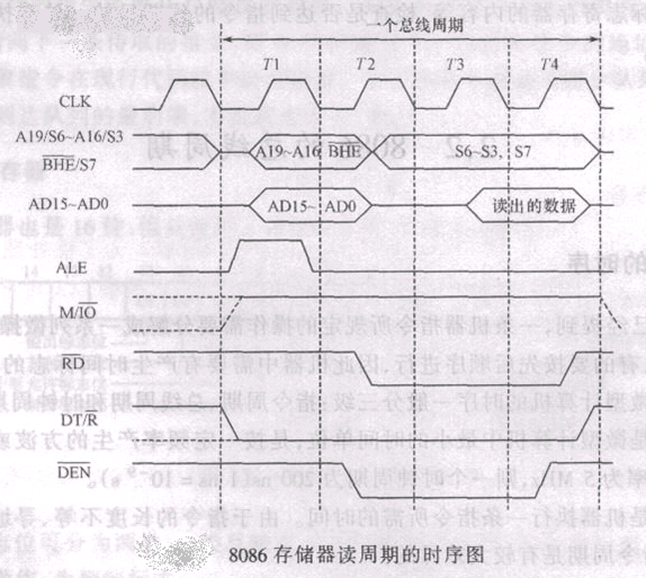
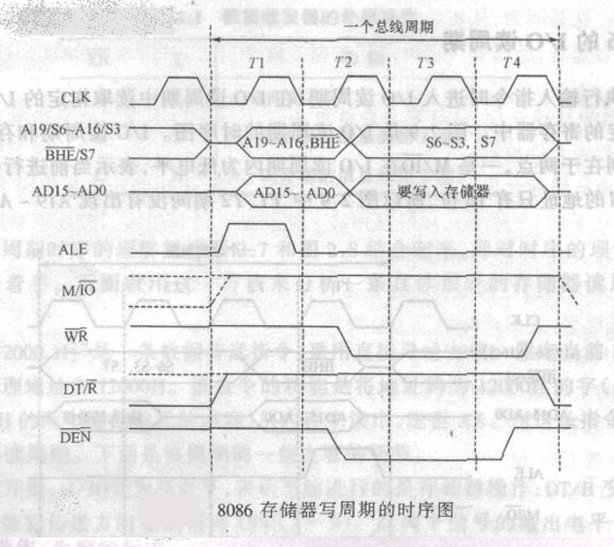

补码：取反加一。
可编程芯片，它们是
FLAGS
地址锁存器 8282 / 74LS373. 对于8282，8位，锁存使能，锁存触发下降沿（来自ALE的下降沿）。
总线驱动器 8286 / 74LS245. 对于8286，8位，芯片使能，输入输出方向控制.
HOLD外设总线请求；HLDA总线请求应答；DT/ 接8286的T控制数据总线方向；接8286使能，控制数据使能；NMI上升沿响应；INTR高电平响应（IF=1时）；RESET清零FLAGS IP DS SS ES和指令队列，CS置FFFF；READY表示储存器或IO准备好；CLK占空比1:3，时钟信号可以来自8284A.
8086的基本总线周期
最小模式读内存时序

最小模式写内存时序

8086内存的FFFF0~FFFFF放了系统复位代码，00000~003FF共Bytes的空间存放了256个中断向量，低字放IP，高字放CS.
8086的IO空间是0000~FFFF共64K个端口。
偏移地址又称有效地址EA，段基址和偏移地址统称逻辑地址。
储存器寻址
[20E9H] ；段超越前缀 ES:[20E9H]。BX、SI、DI默认在数据段；BP默认在堆栈段。20E9H[SI] 或 [SI+20E9H]，默认段寄存器与上面一样。[BX][SI] 或 [BX+SI]，必须一个基址寄存器+一个变址寄存器，BP默认堆栈段，BX默认数据段。IO寻址
DX给出。转移寻址
JMP 20E9:2018 (CS)=20E9H (IP)=2018H.JMP F (IP)=000FH.JMP SHORT label 8bits disp.JMP NEAR PTR label 16bits disp.JMP FAR PTR label 段间转移。JMP AX (IP)=(AX).JMP WORD PTR [BX] (IP)=[BX].JMP DWORD PTR [BX] (CS)=[BX+2] (IP)=[BX].JB JNB JNA JA 系列（above、below）；对于有符号数用JL JNL JNG JG 系列（less、greater）。LOOP LOOPZ LOOPNZ 所有的循环控制转移都是短转移（8bits disp）。CALL label CALL [BX] 段内直接调用和间接调用都是近调用（16bits disp）。CALL FAR PTR label CALL DWORD PTR [BX] 段间直接调用和间接调用都是远调用。RET IRET RET不恢复标志位（CALL不压FLAGS）；IRET都是远转移，且恢复标志位（INT将FLAGS压栈）。MOV DST不能是CS；DST和SRC不能同时为段寄存器；立即数不能直接传入段寄存器。
XCHG 不可以用段寄存器。
XLAT 隐式用AL和BX：(AL)=DS:[BX+AL].
PUSH 和 POP 都是字操作，不可以用字节；POP 不可以到CS。
INC 和 DEC 影响除了CF外的标志位。
CMP OP1, OP2 按照OP1-OP2的结果设置标志位。
MUL OP IMUL OP 将OP乘到AX或AL上，结果放在(DX,AX)或AX中；若乘积的高半部分存了有意义的数字，则OF=CF=1.
DIV OP IDIV OP 对于字节除法AX/OP，AL存商，AH存余数；对于字除法(DX,AX)/OP，AX存商，DX存余数；余数的符号与被除数的符号相同；标志位无定义。
CBW CWD 根据AL或AX的最高位扩展到AH和DX，使作为被除数。
TEST OP1, OP2 按照 AND OP1, OP2的结果设置标志位，影响SF、ZF、PF.
SHL SHR SAL SAR SHL和SAL是一样的，低位补零，高位进CF；SHR高位补零，低位进CF；SAR高位不变，低位进CF. 如果移位大于1位，需要用CL存位数。
ROL ROR RCL RCR ROL和ROR循环的位同时被复制到CF；RCL和RCR高位或低位进CF，原CF进入循环。
MOVSB MOVSW STOSB STOSW LODSB LODSW 源串在数据段，目的串在附加段；STOS和LODS都隐含使用AL或AX寄存器。
CMPSB CMPSW SCASB SCASW SMPS比较源串和目的串当前字或字节；SCAS比较AL或AX与目的串当前字或字节。
REP REPZ REPNZ 加在串指令前的循环操作前缀，计数器CX.
LOCK 总线封锁前缀，使这条指令执行完之前引脚为低电平。
INT
存储容量：基本单元数(芯片字数) (位数/芯片字)
存取速度
两个储存器层次
半导体存储器分类
单地址译码——线性储存块；双地址译码——储存矩阵。
2114是bits的SRAM，6264是bits的SRAM. 每个SRAM单元由6个MOS管储存1bit信息。速度快，功耗大，成本高。
2164A是bits的DRAM. 每个DRAM单元由一个MOS管和电容储存1bit信息，由于电荷泄露，需要定期刷新。有8个地址引脚，需要先给行地址，再给列地址。
DRAM刷新按行进行。
DRAM集成度高，功耗低，需要DRAM控制电路。
74LS138是3-8译码器，74LS139是双2-4译码器。3-8译码器的ABC依次对于低位到高位。
片选方法
Cache的映像方式：直接映像、全相联映像、组相联映像。
IO接口电路必须”输入要三态、输出要锁存“。还要对信号的速度、电平、形式、格式进行匹配。还可以提供外设的状态信号和中断控制逻辑。需要进行地址译码。提供可编程功能。
IO接口交换三种信息：数据信息、状态信息、控制信息。
编址方式有独立编址和统一编址两种，各有优劣，8086采用内存IO独立编址。
PC机使用低10位地址寻址IO端口，地址范围0000~03FF. 高位地址产生片选信号，低位地址选择片内端口。
CPU与外设间数据传送方式
中断源：能发出中断申请的事件称为中断源，处理器内中断源引发的中断称为内中断，处理器外引发的中断称为外中断。
中断过程：中断请求、中断源识别、中断响应、断点保护、现场保护、中断服务、现场恢复、中断返回。
中断判优（仲裁）：软件查询方式、简单硬件方式（菊花链）、专用控制芯片。
非屏蔽中断是外部中断，中断类型码是02H；可屏蔽中断类型码08H~0FH.
除了单步中断（01H）外，所有的内部中断都无法禁止，因此软中断不能通过清零IF标志位来禁止。
8086的中断响应优先级（从高到低）
内部中断
NMI（02H）
INTR 可屏蔽请求
单步中断（01H）
实际上在响应内部中断并保护断点之后，还要检测是否是NMI、是否是单步中断，因此执行中断服务程序的优先级是NMI和单步中断更高。
内部硬中断和NMI由硬件电路产生中断类型码，软中断由指令机器码产生中断类型码，可屏蔽中断由8259在收到第二个有效后将中断类型码发送到数据总线上。
启动时，BIOS和操作系统将非用户中断服务程序的入口地址填入中断向量表。用户定制的中断服务随后装入。
保护断点：FLAGS入栈；TF进暂存器；清TF、IF；CS入栈，IP入栈；查表，更新CS、IP。判断是否由NMI，有的话重新执行保护断点（注意这时暂存器也被清零）；判断是否暂存器为1，是的话重新执行保护断点。
用户中断服务程序的编制
保存当前中断类型码n的服务程序
1MOV AL, n2MOV AH, 35H3INT 21H于是n的初始服务程序段基址放在ES中，偏移地址放在BX中。可以将这两个地址保存到内存里，回头再调回来。
关中断 CLI.
填入新的中断类型码n的服务程序，假设我们编写的服务程序标号为LABEL. 我们先将其段基址放进DS，偏移地址放进DX.
xxxxxxxxxx31MOV AL, n2MOV AH, 25H3INT 21H就把(DS,DX)填入了n对应的中断向量表单元。
开中断 STI.
在我们编写的服务子程序中，注意保护完现场后要开中断，即允许中断嵌套。恢复现场前要关中断。然后执行
xxxxxxxxxx21MOV AL, 20H2OUT 20H, AL向8259的控制端口写EOI控制字。最后开中断，用IRET返回。
最后我们用之前保存在内存中的初始服务程序地址恢复中断向量表。
8路IRQ，级联最多可到64路。8位数据总线。
A0用于选择寄存器。
IMR中断屏蔽寄存器，ISR当前服务寄存器，PR中断优先级裁决器，IRR中断请求寄存器。
工作方式
中断触发
中断嵌套
优先级
中断屏蔽
中断结束
初始化按照ICW1到ICW4的顺序，其中ICW2指定8259A的中断类型码的高五位，一般是08H，低3位自动填入。
ABC3路，每路8位。分为A组和B组。A组包括PA7-PA0和PC7-PC4；B组包括PB7-PA0和PC3-PC0.
8位数据总线，A0和A1选择片内端口。
工作方式
方式0：ABC口都可以设置，基本输入输出，单向，输出锁存，输入三态缓冲无锁存。适用于无条件数据传输。
方式1：AB口都可以设置，利用C口的某些位（AB口各分3位）作为应答联络线，单向，输入输出都有锁存，C口剩余位还可以作为方式0使用。适用于中断、查询方式传输。
方式2：A口可用，半双工，C口部分位（5位）提供应答联络，B口可以工作于方式0或方式1. 适用于中断、查询方式传输。
三通道，每通道计数器16位。
8位数据总线，A0和A1选择片内端口。
每个计数器输入CLK计数和GATE触发，输出OUT. 初值写入初值寄存器，经过CLK的一个上升沿和一个下降沿后被装入减一计数器，需要读出时进当前数值锁存器。
计数器初值的最大值是0000H，因为是减一再判零。
读出计数器当前值包括一次写两次读：向控制口写锁存命令，读计数器端口（低八位），读计数器端口（高八位）。
工作方式
| 方式 | 触发方式 | 装入次数 | GATE | OUT | 说明 |
|---|---|---|---|---|---|
| 方式0 | 自动触发 | 1次 | 1允许，0暂停 | 写控制字后0，计数结束后1 | 写入N后经过N+1个CLK周期OUT变高 |
| 方式1 | 硬件触发 | 多次 | 任何时候，GATE上升沿到达后，经过一个CLK上升和下降，初值被装入 | 写控制字后1，装入后0，计数结束后1 | OUT负脉冲宽度为N个CLK |
| 方式2 | 自动触发 | 多次 | 1允许，0暂停，由0变1重新计数 | 写控制字后1，计数器为1时0，计数结束1，反复 | 1/N分频器，负脉冲宽度1个CLK |
| 方式3 | 自动触发 | 多次 | 1允许，0暂停，由0变1重新计数 | 写控制字后1，N/2或(N-1)/2时0，计数结束1，反复 | 占空比1:1的1/N分频器，0宽度小于等于1宽度 |
| 方式4 | 自动触发 | 1次 | 1允许，0暂停 | 写控制字后1，计数器0时0，之后1 | 写入N后经过N+1个CLK周期，负脉冲宽度1个CLK |
| 方式5 | 硬件触发 | 多次 | 任何时候，GATE上升沿到达后，经过一个CLK上升和下降，初值被装入 | 写控制字后1，计数器0时0，之后1 | 写入N后经过N+1个CLK周期，负脉冲宽度1个CLK |
同步：码元同步、字符同步、帧同步。
异步串行通信标准
调制解调：DA/AD转换，以正弦波传输，避免传输线效应导致边沿失真。
RS232C标准最小连线：TxD1RxD2，TxD2RxD1，SG1SG2.
8251一路发送一路接收，都有缓冲器。
8位数据总线，A0接选择片内端口。
发送数据写入缓冲器后TxRDY有效，接收数据写入缓冲器后RxRDY有效。
初始化约定：先向控制口写3个0，再写一个40H，执行软复位；然后写方式字，再写命令字。
DMA操作
4通道，可级联。
8位数据总线，8位地址总线。
页面寄存器：扩充地址的高4位或8位。
DREQ DACK DMA请求和响应。
HRQ HLDA 总线请求和响应。
ADSTB A7-A0输出地址低8位，D7-D0输出高8位，由于数据总线复用了，ADSTB使外挂的地址锁存器将地址锁存。
AEN 总线独占信号，使CPU总线信号无效。
工作模式
传送类型
优先级
编程步骤
总线由传输信息的物理介质和一套管理信息传输的通用规则构成。
功能分类：数据总线、地址总线、控制总线、电源和地、备用线。
层次分类：片总线（片内总线、片间总线）、内总线、外总线。
总线操作过程